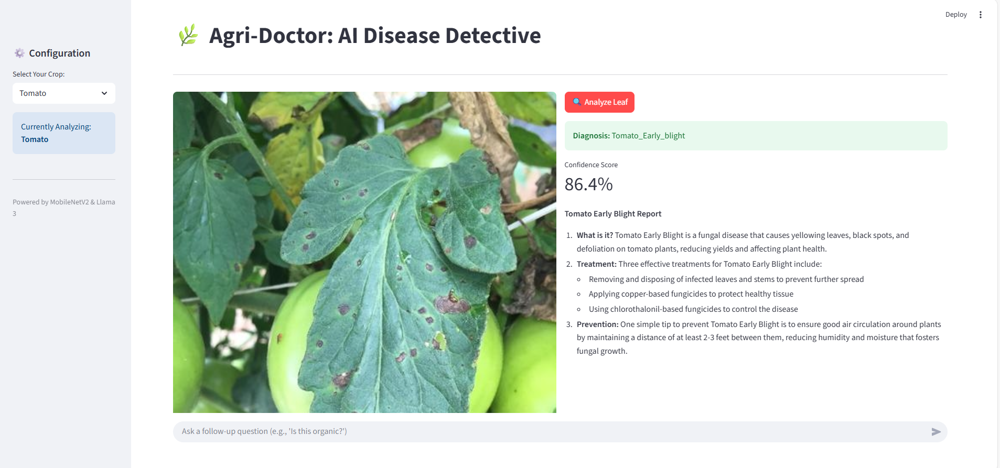

Agri-Doctor: A Multi-Modal AI System for Plant Disease Detection & Prescription
Developed a multi-modal AI system for plant pathology that identifies diseases and provides prescriptions. Integrated CNN-based computer vision with LLMs to deliver real-time, actionable agricultural treatment plans.
View Repository
The Problem: Agricultural productivity is often hampered by crop diseases that go undetected or are misdiagnosed, leading to significant yield loss for farmers. The Solution: I developed an AI-driven application that identifies plant diseases from images and provides automated treatment prescriptions. Technical Highlights:Developed a Computer Vision model using CNNs (Convolutional Neural Networks) to classify various plant diseases with high accuracy. Integrated a Generative AI (LLM) component to generate detailed prescriptions and care instructions based on the identified disease. Designed the system to bridge the gap between complex diagnostic technology and practical, actionable advice for farmers.